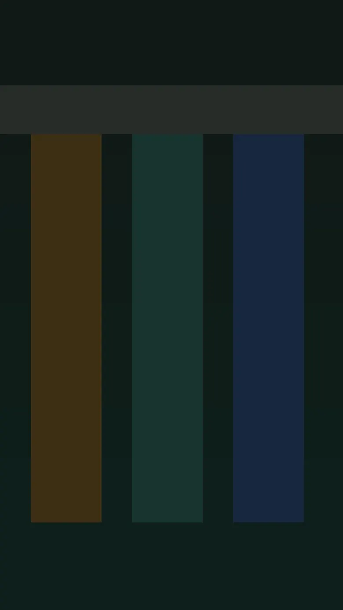

РябиноваяУровень 1 · Один заказ
03:00
Отгружено0 / 1
Вовремя0%
Точность100%
ЛераВыберите заявку и начните сборку.Сухой фургон
Сейчас
Заявки
Смена3:00
Приёмка
Смена закрыта
Рябиновая · ТСД
Новая смена
Поставщик
В паллете
Куда
Что собрать
Зона хранения
Задания приходят сюда. Сводка смены и список заявок — под фотографией склада.
Все смены кампании пройдены. Дальше — «Поток»: склад работает сам, а вы успеваете за ним на четырёх станциях — приёмка, размещение, отбор, погрузка.